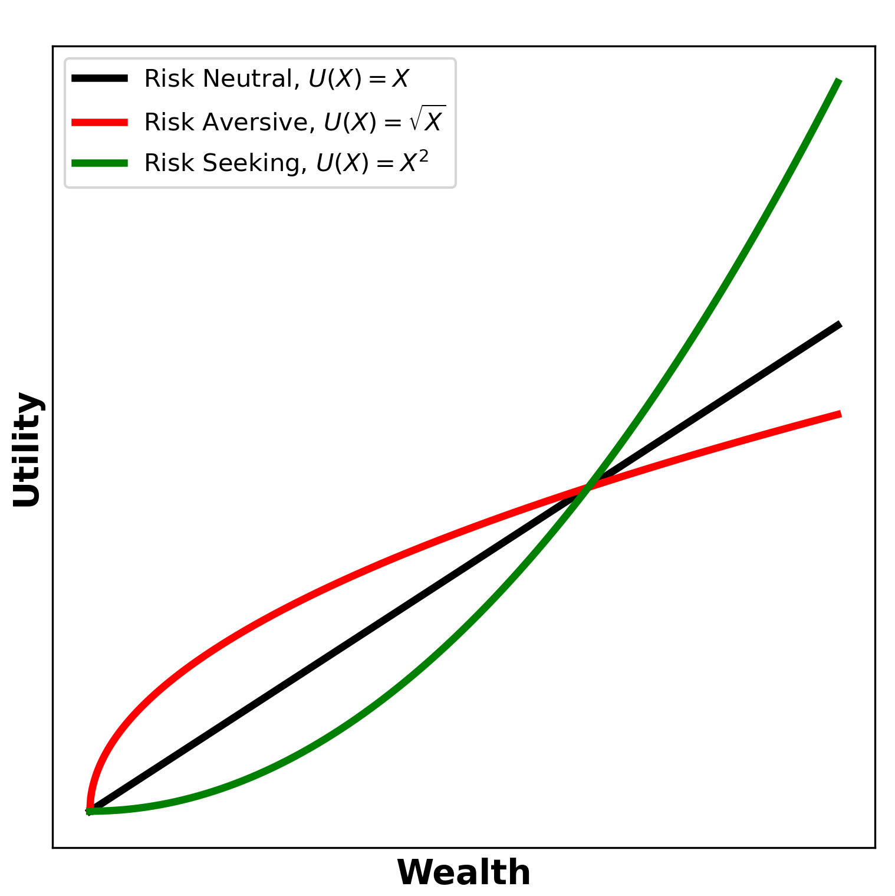
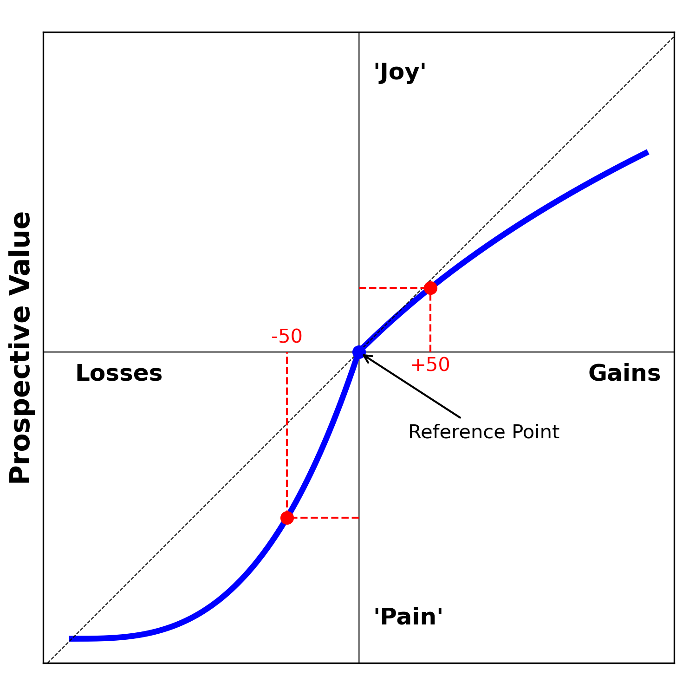

The ability to read the mind of criminals for sure sounds exciting. On the one hand, it can help with the understanding of the nature of human violence. On the other hand, it can help prevent future crimes. TV shows like Profiler, Criminal Minds, and Mindhunter have tried to depict what it is like to get into the mind of offenders. In such shows, a group of special agents usually investigates the crime scenes, talks to the witnesses and relatives of the victim, and then tries to build up a profile of the offender using the combination of the obtained information and the relevant historical crime data. Such analysis helps them understand the offenders’ motives and predict their future actions.
In this post, I will give an overview of how such fields as economics, psychology, and criminology have combined in real life to investigate criminal behavior. I will briefly introduce the economic models of human decision-making and how they have been tested in criminal research. Additionally, I will introduce other factors that may influence offenders’ decision-making, such as emotions, mental health impairments, and social interactions.
As exciting as it may sound, assessing anyone’s decision-making processes is not the most straightforward task. However, there is still something we can do.
Imagine you want to know whether you have abnormal blood sugar levels. If you went to a doctor, they could take a blood sample to check your glucose level. Then the doctor would compare your results with the “normal” values and speculate how substantial the deviation is. In this case, these normal values would be the conventional ones. Say, on average for healthy people of your gender, age, and dietary preferences, the glucose level is in a \([a, b]\) range. Comparing your results to these values could tell whether your blood sugar level is low, normal, or high.
Now let’s apply the same idea to decision-making measures. Even though it may sound more abstract, over the last decade, scholars have developed several tests and games that could help understand patterns and approaches people make when facing particular dilemmas. The same as for the blood sugar values, outcomes of such tests alone may not be very informative as when compared between different groups. For example, if we wanted to know whether burglars show, on average, a risky behavior, the good approach would be asking “Riskier than who?”. And then compare the test results between burglars and the control non-burglary group, which ideally would perfectly match by relevant parameters, such as gender, social-economic status, demographic, etc. Table 1 gives an overview of several such games that will also be mentioned later in this post.
Another more theoretical approach is comparing the offenders’ behavior to the behavior from so-called normative models. Normative models provide a standard for defining the type of thinking that is optimal for achieving one’s goals. Whereas descriptive models, on the other hand, refer to theories of how people typically think and make decisions.
In 2019 Jones and colleagues performed a review and meta-analysis of experiments on the offenders’ decision-making (Jones et al., 20192). Even though the individual studies showed that offenders with mental disorders make poorer decisions compared to controls, the meta-analysis didn’t reveal statistical significance in their performance (IGT was chosen as a primary means of comparison). Let’s take a look at some individual studies.
In a study by Radke et al. (2013)3, social decision-making was compared between three groups of subjects, male offenders with and without psychopathy and healthy controls, using the UG. Results showed that offenders without psychopathic traits showed deficits in social decision-making, while offenders with psychopathy behaved similarly to healthy controls, showing the same rejection rates for the proposals. On the other hand, results from Koenigs et al. (2010)4 revealed no difference in the acceptance rate between secondary psychopaths and non-psychopaths. Still, they found a lower acceptance of unfair offers for primary psychopaths.
Nishinaka et al. (2016)5 looked at the decision-making of Japanese forensic psychiatric patients using IGT. Forensic patients exhibited poorer performance than the control group since they were less likely to avoid making risky selections during the task, suggesting that they may fail to learn from emotional feedback. Authors conclude that forensic patients with psychiatric disorders exhibit a wide range of neuropsychological impairments, suggesting that these impairments may increase the risk of violent behavior.
In line with these results, Kirkpatrick and colleagues also showed that offenders with mental health impairment show risky behavior (Kirkpatrick et al., 20176). They compared offenders with histories of serious violent or sexual offences and a diagnosis of borderline personality disorder (BPD) with controls (please refer to the original publication for the description of the task). Offenders with BPD engaged in more risky options than controls, exhibiting deficits in processing information about the potential loss when the probability of gains was high. Authors argued that a diagnosis of BPD and a history of serious offences result in problems integrating different reinforcement signals when choosing between risky actions.
DeBrito et al. (2013)7 examined executive functioning in violent offenders with antisocial personality disorder (ASPD) and psychopathy, violent offenders with ASPD without psychopathy, and non-offenders using CGT. Results showed that both groups of offenders made poorer decisions. The decision time was increasing as the box ratio became less favorable, which suggests that offender groups were aware of the changing probabilities and increased risk of losing points but did not adjust their behavior. Authors related this to real-life decision-making, when antisocial behavior is continued, despite an awareness of the negative consequences. There were no between-group differences for offender groups, suggesting similar decision-making patterns.
Using the ADMT, Ly et al. (2016)8 examined affective decision-making in violent offenders with a history of psychiatric disorders and controls with no criminal record or history of mental illness. Results showed that control participants avoided angry faces, but violent offenders did not. Results suggest disordered affective processing in violent offender groups. This may explain to some extent why people with a history of violent offending may not be affected by social-emotional cues (e.g., screaming or crying) that would interfere with their decision to commit the act.
Examining the relationship between offending behavior and mental health is particularly interesting since evidence exists for higher rates of mental disorders among prisoners than in the general population (such as psychosis, substance use disorders, or depression). Moreover, mental illnesses increase re-offending risk (Jones et al., 20199).
“We don’t have to stop inventing abstract models that describe the behavior of imaginary Econs. We do, however, have to stop assuming that those models are accurate descriptions of behavior, and stop basing policy decisions on such flawed analysis.”
― Richard H. Thaler, Misbehaving: The Making of Behavioural Economics
Behavioral economics has been particularly useful in modeling human decision-making, and later these models have been applied in criminology. However, for most theories and models, there is always controversy and inconsistency, especially when we think about complex human nature.
Rational choice theory prescribes that individuals perform a cost-benefit analysis to make rational choices and achieve outcomes that fit their needs and desires. Consider an ultimatum game with you being a Responder. The Proposer has been given 100 dollars and proposed you take \(x\) of it (while they end up with \((100-x)\)). Would you accept the offer?
Being entirely rational, you would choose option one since the benefits outweigh the costs regardless of how much the Proposer would offer. Or in other words, you would rather end up with any amount of money than nothing. However, as one could imagine, human decision-making has much more to unpack.
First, economic theory introduces the term utility function \(U = f(X)\) that, technically speaking, reflects the total satisfaction/benefit an actor gets from the consumption of the commodities. For instance, an incremental dollar bill given to a billionaire has less utility than an incremental dollar bill given to someone with nothing. In the simple case, the utility function could be linear \(U(X) = X\) (Figure 2), where utility is the same as the absolute wealth obtained from the goods. More commonly proposed function is however \(U(X) = \sqrt{X}\), which includes the risk aversion. Risk aversion property will be discussed later in the post. The main point of the utility function is that not all risks, costs, and benefits carry equal weight in the decision-making process for different individuals or for the same individual over time.

Secondly, think about two scenarios. In the first one, the Proposer suggests a 50-50 split, and 95-5 (where the Proposer takes the bigger half) in the second one. Would your decision of acceptance be the same? Various experiments have shown that people are more likely to accept the offer in the first case but reject the offer in the second case. Moreover, Schweitzer and Gibson (2008)10 found that when people think they are mistreated, they become angry at the person responsible for it and feel justified in taking revenge. As discussed before, in both scenarios, a Responder initially starts with 0 and ends with a value greater than 0. So in terms of maximizing self-interest, both actions are considered optional. However, the problem is that humans are often not rational. We can feel unfairness or jealousy when given just 5 dollars out of 100, so we may reject the offer to “punish” the Proposer in return. This is the flaw of rational choice theory. It doesn’t account for emotions, cultural nuance, or unconscious behavior and instead shows how decisions should be made.
Thirdly, it is worth mentioning that actors often face uncertainty around events and actions in real life. Imagine somewhat different rules of a game. Now the Proposer flips a coin. If it comes up Heads, they split the money with \(x\) for you and \((100-x)\) for them, and if it comes up Tails, they take all the money. You can again either agree to flip the coin or reject it, and everyone ends with nothing. This is where the term expected utility \(\mathbb{E} \big[ U(X) \big]\) comes into play, which can be thought of as a sum of utility values weighted by their probabilities. Assuming \(U(X) = X\) utility function we have the following options:
In this case \(\mathbb{E} \big[ U(X_1) \big] > \mathbb{E} \big[ U(X_2) \big]\), so the rational actor would still choose to play regardless of the proposed amount in the case of Heads.
Thus probabilities of benefits and risks (which could be either known or perceived) affect the decision-making. For example, in a series of experiments, Casey and Scholz (1991)11 found that ambiguity around detection risk reduced college students’ willingness to commit tax noncompliance when detection risk was low but had the opposite effect when detection risk was high.
Lastly, apart from uncertainty, humans face other factors like imperfect information or time constraints that limit their rationality. When you want to buy the best sauce for pasta, you will not consider different sauces in every grocery store in your city. In the same way, when a burglar wants to rob a house, they probably will not explore each house in the neighborhood to find the target that fulfills all criteria. This reflects so-called bounded rationality, which suggests that humans make suboptimal decisions that are good enough for the current state of the environment, purposes, etc. Bounded decision-making has been shown in the review of sexual crimes by Pedneault et al. (2017)12. They have shown that often the decisions were sub-optimal and were concerned for immediate positive and negative outcomes but discounted delayed consequences. For example, the selected crime location could be accessed by a third party, preventing the crime. These results also suggest that sexual offenders engage in myopic decision-making.
Furthermore, humans often make “intuitive” decisions using so-called cognitive heuristics (shortcuts), which may lead to systematic biases. Such heuristics save effort but can reduce the accuracy. For example, for residential burglars, environmental cues (the lighting, conspicuousness of the target, etc.) constitute rules of thumb for intuitive cost-benefit perceptions. Pogarsky and Piquero (2003)13 have shown that offenders with a short criminal history tended to reduce their perceived arrest risk after experiencing punishment, which reflects the gambler’s fallacy. The gambler’s fallacy is the incorrect belief that if a particular event occurs more frequently than normal during the past, it is less likely to happen in the future (or vice versa) when it has otherwise been established that the probability of such events does not depend on what has happened in the past. So it may look like such offenders are using the philosophy “If I was caught once, it’s doubtful that I will be caught again”.
Prospect theory describes how humans actually make decisions without rationality assumption. It prescribes that individuals make decisions based on expectations of loss or gain from their relative position (sometimes called the reference point). An essential element of prospect theory is that individuals are particularly averse to losing what they already have and less concerned about gaining. Given a choice of equal probability, individuals would choose to preserve their existing wealth rather than risk the chance to increase wealth.

Consider a classical Asian disease paradox. Imagine that the US is preparing for an unusual Asian disease outbreak, which is expected to kill 600 people. Two alternative programs to combat the disease have been proposed.
Problem 1:
Which of the two programs would you prefer?
Problem 2:
Again, which of the two programs would you prefer?
If you paid close attention to the numbers and expected outcome, you could notice that programs use the same logic in both problems but are described differently. However, Tversky and Kahneman have shown that people are more likely to select program A in the first problem and program B in the second one (Tversky & Kahneman, 198114). The main idea here is that humans have different preferences depending on their perceptions. An emphasis on gains evokes risk-averse behavior, whereas a focus on losses evokes risk-seeking behavior.
The hyperbolic shape of preferences for gains and losses can also be observed for delayed outcomes. Loughran and colleagues collected data from university undergraduate students who responded to a hypothetical scenario involving drunk driving (Loughran et al., 201215). Participants had to indicate the estimated probability that they would drink and drive under the conditions described in the scenario. Scenarios involved several time points, starting from “tonight” up to “10 years from now”. They found that participants put more weight on close-in-time outcomes than the same outcomes in some observable future, whereas this was more pronounced for gains than losses. For example, when the benefit of drinking and driving was delayed by one week, the self-reported intention to drink and drive increased by nearly 10%. However, when the gain was postponed by one month, intentions to drink and drive increased by only 4%.
Whichard and Felson (2016)16 have related loss aversion property to the crimes that a priori have a low probability of success. For example, a target of a verbal attack which is facing the options to retaliate and possibly get physical injuries or to walk away and lose face, could go with the first option if they perceive losing face as a more significant loss. Another example would be the increased likelihood of homicide. Offenders are likely to anticipate a specific loss if they know that the victim or other witnesses can identify them. When offenders believe that allowing a witness to survive will lead to incarceration, homicide is more likely. The risk of severe punishment increases, but they take the risk to avoid a sure loss. The perception of inevitable loss is also expected to lead to lethal intent when people conflict with an armed or otherwise dangerous adversary. They are likely to take significant risks when it is “kill or be killed” and may engage in preemptive strikes when they anticipate an attack.
In the same way, the decision to resist the arrest may also seem irrational due to the estimated low chances of success. However, once the suspect perceives that they will be arrested, this realization can shift the offender’s reference point such that the impending arrest is a loss, thereby triggering the type of risk-seeking behavior that resisting arrest entails. However, as the authors pointed out, the decision to perform “senseless” or irrational choices can be influenced not only by the desire to avoid a sure loss but also by intoxication, mental impairments (as discussed in the Playing Games with Offenders section), or intelligence lack.
Additionally, a large body of literature suggests that individuals are more likely to make risky decisions when they are emotionally aroused. An example of such findings is work from Ariely and Lowenstein (2006)17. Recruited male undergraduate students were asked to evaluate the attractiveness of different sexual activities under the effect of high arousal achieved by masturbation. Results revealed that participants in the aroused group were more willing to engage in “date-rape” like behaviors and risky sexual practices than the control group. For example, they got significantly higher answer scoring for the questions like “Would you keep trying to have sex after your date says ‘no’?” or “Would you slip a woman a drug to increase the chance that she would have sex with you?” and lower scoring for the questions like “Would you always use a condom if you didn’t know the sexual history of a new sexual partner?”. Although it is important to note that the authors didn’t observe actual behavior, the questionnaire responses, so the results show what subjects think they would do in situations like these rather than what they did.
Notably, the decision to offend may be produced in a reinforcement way. If individuals experience that acts of crime do not result in legal punishment or feelings of shame or guilt, they may, over time, internalize the idea that such acts are acceptable or justifiable, thus, adjusting their perceptions about risks and costs. If the consequences of the action were overall positive, individuals would change their perceptions of rewards accordingly and would be more likely to engage in similar acts in the future. Vice versa, when individuals feel that an experience does not meet their expectations about the potential “thrill” or increased social status, they may internalize this and readjust their perceptions of benefits.
To summarize, it was a brief overview of research literature that assesses offenders’ decision-making. Even though criminals can be thought of as impulsive and reckless, the literature suggests they can be rational (even in a bounded way) and perform a cost-benefit analysis. Some external or internal factors however may affect the rational action selection, such as intoxication, mental health history, or the influence of peers. Note that none of those mentioned above papers leads to the causal relationship. For example, it is not clear what happened first, whether acts of crime are a result of individuals’ risky behavior or whether the history of offending has changed individuals’ risk perception.
Jones, K. A., Hewson, T., Sales, C. P., & Khalifa, N. (2019). A Systematic Review and Meta-Analysis of Decision-Making in Offender Populations with Mental Disorder. Neuropsychology Review, 29(2), 244–258. https://doi.org/10.1007/s11065-018-09397-x↩︎
Jones, K. A., Hewson, T., Sales, C. P., & Khalifa, N. (2019). A Systematic Review and Meta-Analysis of Decision-Making in Offender Populations with Mental Disorder. Neuropsychology Review, 29(2), 244–258. https://doi.org/10.1007/s11065-018-09397-x↩︎
Radke, S., Brazil, I. A., Scheper, I., Bulten, B. H., & de Bruijn, E. R. A. (2013). Unfair offers, unfair offenders? Fairness considerations in incarcerated individuals with and without psychopathy. Frontiers in Human Neuroscience, 7. https://doi.org/10.3389/fnhum.2013.00406↩︎
Koenigs, M., Kruepke, M., & Newman, J. P. (2010). Economic decision-making in psychopathy: A comparison with ventromedial prefrontal lesion patients. Neuropsychologia, 48(7), 2198–2204. https://doi.org/10.1016/j.neuropsychologia.2010.04.012↩︎
Nishinaka, H., Nakane, J., Nagata, T., Imai, A., Kuroki, N., Sakikawa, N., Omori, M., Kuroda, O., Hirabayashi, N., Igarashi, Y., & Hashimoto, K. (2016). Neuropsychological Impairment and Its Association with Violence Risk in Japanese Forensic Psychiatric Patients: A Case-Control Study. PLOS ONE, 11(1), e0148354. https://doi.org/10.1371/journal.pone.0148354↩︎
Kirkpatrick, T., Joyce, E., Milton, J., Duggan, C., Tyrer, P., & Rogers, R. D. (2007). Altered Emotional Decision-Making in Prisoners with Borderline Personality Disorder. Journal of Personality Disorders, 21(3), 243–261. https://doi.org/10.1521/pedi.2007.21.3.243↩︎
de Brito, S. A., Viding, E., Kumari, V., Blackwood, N., & Hodgins, S. (2013). Cool and Hot Executive Function Impairments in Violent Offenders with Antisocial Personality Disorder with and without Psychopathy. PLoS ONE, 8(6), e65566. https://doi.org/10.1371/journal.pone.0065566↩︎
Ly, V., von Borries, A. K. L., Brazil, I. A., Bulten, B. H., Cools, R., & Roelofs, K. (2016). Reduced transfer of affective value to instrumental behavior in violent offenders. Journal of Abnormal Psychology, 125(5), 657–663. https://doi.org/10.1037/abn0000166↩︎
Jones, K. A., Hewson, T., Sales, C. P., & Khalifa, N. (2019). A Systematic Review and Meta-Analysis of Decision-Making in Offender Populations with Mental Disorder. Neuropsychology Review, 29(2), 244–258. https://doi.org/10.1007/s11065-018-09397-x↩︎
Schweitzer, M. E., & Gibson, D. E. (2007). Fairness, Feelings, and Ethical Decision- Making: Consequences of Violating Community Standards of Fairness. Journal of Business Ethics, 77(3), 287–301. https://doi.org/10.1007/s10551-007-9350-3↩︎
Scholz, J. T., & Pinney, N. (1995). Duty, Fear, and Tax Compliance: The Heuristic Basis of Citizenship Behavior. American Journal of Political Science, 39(2), 490. https://doi.org/10.2307/2111622↩︎
Pedneault, A., Beauregard, E., Harris, D. A., & Knight, R. A. (2017). Myopic decision making: An examination of crime decisions and their outcomes in sexual crimes. Journal of Criminal Justice, 50, 1–11. https://doi.org/10.1016/j.jcrimjus.2017.03.001↩︎
Pogarsky, G., & Piquero, A. R. (2003). Can Punishment Encourage Offending? Investigating The “resetting” Effect. Journal of Research in Crime and Delinquency, 40(1), 95–120. https://doi.org/10.1177/0022427802239255↩︎
Tversky, A., & Kahneman, D. (1981). The Framing of Decisions and the Psychology of Choice. Science, 211(4481), 453–458. https://doi.org/10.1126/science.7455683↩︎
Loughran, T. A., Paternoster, R., & Weiss, D. (2012). Hyperbolic Time Discounting, Offender Time Preferences and Deterrence. Journal of Quantitative Criminology, 28(4), 607–628. https://doi.org/10.1007/s10940-011-9163-5↩︎
Whichard, C., & Felson, R. B. (2016). Are Suspects Who Resist Arrest Defiant, Desperate, or Disoriented? Journal of Research in Crime and Delinquency, 53(4), 564–591. https://doi.org/10.1177/0022427816632571↩︎
Ariely, D., & Loewenstein, G. (2006). The heat of the moment: the effect of sexual arousal on sexual decision making. Journal of Behavioral Decision Making, 19(2), 87–98. https://doi.org/10.1002/bdm.501↩︎
Hoeben, E. M., & Thomas, K. J. (2019). Peers and offender decision‐making. Criminology & Public Policy, 18(4), 759–784. https://doi.org/10.1111/1745-9133.12462↩︎
McGloin, J. M., & Thomas, K. J. (2016). Incentives for collective deviance: Group size and changes in perceived risk, cost, and reward*. Criminology, 54(3), 459–486. https://doi.org/10.1111/1745-9125.12111↩︎
Social Influence
Regardless of how strongly we believe that we don’t rely on the opinion or validation of others, we are still social creatures. Here I will provide several notes on the social influence on offender decision-making based on the comprehensive review by Hoeben and Thomas (2019)18. As discussed in the Rational Choice and Expected Utility Theory part, most of the time, we don’t have enough information about all the possible outcomes of all possible actions. But even if an individual has never experienced the crime they are about to commit, observation of others may shape their own perceived costs and benefits. For example, observing peers getting away with a crime may decrease an individual’s risk of being caught, and vice versa, when individuals observe that their peers are caught and punished, it may increase their perceived sanction risk.
Moreover, as highlighted by Hoeben and Thomas, the influence of peers can be passive (without direct interaction) and active (with direct interaction). For the passive peer influence authors highlight five important points:
In terms of active influence, peers can “fill the gaps” in the missing information of the decision-making process of an individual and therefore influence the anticipated risks and benefits (e.g., “It will be a thrill” or “Relax, my friend John has done that and it went good”). This can be done in the form of a discussion of the potential crime but also in the form of the instigation. Co-offending can also reduce the time needed for a crime or make the crime execution easier. But at the same time, it may increase the risks since of the possibility of betrayal, the problem with incompetency group members, or unfair profit shares.